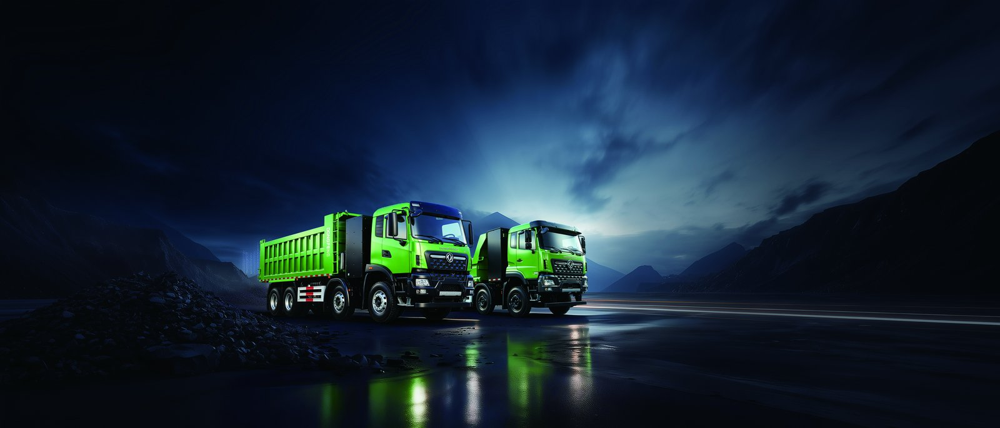

Reconstruction crews in Erbil are turning to the TZ8J electric mixer truck because a zero-emission electric truck cuts both diesel cost and inner-city noise during night pours. This 8 m3 drum concrete mixer built on the Dongfeng EV platform is quickly becoming the practical choice for ready-mix fleets serving the Kurdistan Region rebuilding program, and contractors who have run a demonstration unit report measurable savings on every cubic metre placed.
Erbil's reconstruction pipeline spans hospitals, schools, and residential blocks where delivery windows often fall inside residential quiet hours. The TZ8J electric mixer truck answers that pressure with a permanent magnet drive that produces full torque from standstill, so the drum reaches mixing speed without the diesel clatter of a conventional pump. Contractors report that site complaints about early-morning noise drop sharply once an electric truck replaces an older mixer on the same route.
The key advantage for Iraqi fleets is predictable operating cost. Diesel in the Kurdistan Region has been volatile, while grid and generator electricity for charging stays easier to budget. The TZ8J pairs a CATL LFP battery with a liquid-cooled thermal loop that holds cell temperature in the 25-35 °C window even when the drum hydraulics are working hard, which protects range through the hottest afternoons of the year and keeps cycle life intact.
Dispatch planning barely changes when a fleet converts from diesel to electric. The 8 m3 drum matches the volume of a conventional mixer, so batching plant schedules, pump crews, and pour sequences stay the same while the energy bill and the noise footprint both fall.
| Parameter | Specification |
|---|---|
| Battery pack | CATL LFP, 282 kWh |
| Motor | LvKong permanent magnet, 350 kW |
| Drum volume | 8 m3 concrete |
| Typical range | 220 km per charge under ready-mix duty |
| Charging | DC fast charge 20-80% in ~75 min |
| Energy use | 1.4-1.6 kWh/km loaded |
| Warranty | 8-year / 4,500-cycle battery warranty |
| FOB price | $98,000-$130,000 |
These numbers place the TZ8J squarely in the payload and range band that Erbil ready-mix operators need for same-day return trips between the batching plant and the job site. The liquid-cooled CATL pack is the same chemistry used across the Dongfeng EV range, so spare modules and service know-how carry over between models in a mixed fleet.
A typical Erbil ready-mix loop runs 40-90 km each way with stop-start delivery at multiple pours across a single shift. At 1.5 kWh/km loaded, the 282 kWh pack supports roughly 180-220 km of real work before a midday top-up. Most fleets schedule a charging window during the afternoon lull, which keeps the truck on the road for a full two-shift day without range anxiety.
Cooling matters more than headline range on hot Iraqi afternoons. The liquid-cooled battery holds the 25-35 °C operating window, protecting cycle life through the 4,500-cycle warranty even under repeated fast charging. Fleets that ran the truck through a full summer reported no meaningful range loss between the first and last pour of the day, which is exactly what a commercial ready-mix operator needs.
Municipal noise rules in dense Erbil districts limit diesel equipment during night and early-morning hours. An electric mixer truck runs below the threshold that triggers complaints, letting contractors pour slabs and foundations on tight urban schedules. The TZ8J electric mixer truck is engineered for exactly this low-noise profile, which keeps projects on schedule when neighbours would otherwise block a diesel pour.
Beyond compliance, quiet operation improves site safety because crews can hear instructions and reversing alarms clearly. The absence of engine vibration also reduces operator fatigue across long double shifts, a factor that matters for quality control on structural concrete where consistent slump and placement speed protect the finished strength.
Fleets charging at a central depot need roughly 180-240 kW of DC fast charge capacity per truck to complete a 20-80% top-up in about 75 minutes. Many Erbil operators already run solar or generator banks at the batching plant, which makes a shared charger a low-capital add-on. The TZ8J accepts standard DC fast charge protocols, so no proprietary infrastructure is required on site.
For sites far from the depot, a mobile charging plan using a generator-backed inverter keeps the truck working through grid outages. Because consumption is 1.4-1.6 kWh/km loaded, even a modest generator can extend the daily range enough to finish a critical pour, which is a real advantage in a region where power stability varies by district.
Buyers planning a fleet should study local duty, port handling, and charger setup before signing. The Iraq electric truck market page covers import steps, dealer support, and typical delivered cost for the Kurdistan Region. Early adopters in Erbil have already standardized on shared depot charging to keep capital cost down while scaling from one demonstration unit to a full ready-mix fleet.
Shaanxi Fenghan Trading coordinates shipping documents, Certificate of Origin, and pre-delivery inspection so the truck arrives job-ready. Lead time depends on order volume, but batch orders for reconstruction programs are prioritised through the Dongfeng export line, and spare parts kits are pre-positioned to minimise any downtime during the busy building season.
Diesel mixer trucks in Iraq burn through fuel and engine service, while the TZ8J shifts cost to predictable electricity at $0.08-0.20/kWh against diesel at $0.90-1.20/L. Over a 4,500-cycle battery life the energy saving alone can offset a large share of the purchase premium, and maintenance drops because there is no engine, exhaust, or complex transmission to service. Brake wear is also lower thanks to regenerative braking.
When tenders reward low-emission delivery, the electric truck opens contract opportunities that a diesel fleet cannot chase. For Erbil reconstruction, where quiet, clean, and on-time concrete placement wins repeat work, the TZ8J pays back through both direct savings and new business. Most operators model payback inside the first three years of heavy duty, after which the energy margin is pure saving.
The TZ8J electric mixer truck is backed by an 8-year or 4,500-cycle CATL LFP battery warranty, which is the foundation of any fleet business case in the Iraqi Erbil ready-mix segment. Because the pack is liquid cooled and held in the 25-35 °C window, most operators reach the cycle limit on calendar time rather than degradation, meaning the battery is a planned, depreciable asset instead of a risk. Fleets should log kWh/km from day one so warranty claims are supported by clean data when a cell module eventually needs service under the published terms.
The LvKong permanent magnet motor is sealed and low-maintenance, and the single-speed reduction removes the clutch, gearbox, and exhaust systems that dominate diesel service cost. In the Iraqi Erbil ready-mix cycle this typically cuts scheduled maintenance labor by more than half versus an equivalent diesel truck. Shaanxi Fenghan Trading pre-positions common spares and trains local technicians so a module swap or brake service does not idle the truck for weeks waiting on a cross-border shipment.
Energy is the other half of lifecycle planning. At 1.1-1.6 kWh/km and electricity at $0.08-0.20/kWh, the TZ8J electric mixer truck costs only a few cents per kilometre in energy, against diesel at $0.90-1.20/L for a comparable truck. Over a 4,500-cycle life this gap is the single largest contributor to payback, and it is why Iraqi Erbil operators who run fixed loops convert to electric first while keeping diesel only for unpredictable long-haul work.
Most buyers size the depot charger from the daily km target rather than peak power. For the TZ8J electric mixer truck with its 282 kWh pack and a typical 220 km range, a 20-80% top-up delivers about 60 percent of pack capacity in 60-90 minutes, implying a 150-240 kW DC fast charger shared at the depot. We help you model the loop, choose the charger, and confirm electrical supply before the truck arrives so the first revenue run is not delayed by site works or utility approvals.
FOB pricing for the TZ8J electric mixer truck starts around $98,000-$130,000, with final delivered cost depending on cab configuration, body, and destination port handling. Shaanxi Fenghan Trading quotes a firm number after a short specification call, and batch orders for fleet conversion are prioritised through the Dongfeng export line with pre-inspection and documentation handled end to end so your team can plan capital with confidence.
Shaanxi Fenghan Trading Co., Ltd supplies the TZ8J with export documentation, spare parts planning, and WhatsApp support at +86 153 1943 1311. Email sales@fenghan-trade.com for FOB pricing and a delivery schedule tailored to your Erbil reconstruction contracts. Our team helps you size chargers, train drivers, and plan battery warranty claims so your electric truck fleet stays productive from day one of the project.
Ready to electrify your fleet? Contact Shaanxi Fenghan Trading — authorized Dongfeng EV truck exporter. WhatsApp: +86 153 1943 1311 | Email: sales@fenghan-trade.com | dongfengevtrucks.com
🌐 Our Network: Fenghan Trade (SAGMOTO/SHACMAN Truck Export) · heavy duty mining dump truck 6x4 8x4